最新方向：以大写 L 为主识别，融合圆角盒体、厚黑块面与白色负形。原10张探索板保留；根据追加要求，补了下面两张L主识别版，每张24款。
选择方式：例如“L-A 第2行第2列”。当前为概念位图，尚未替换网站Logo。
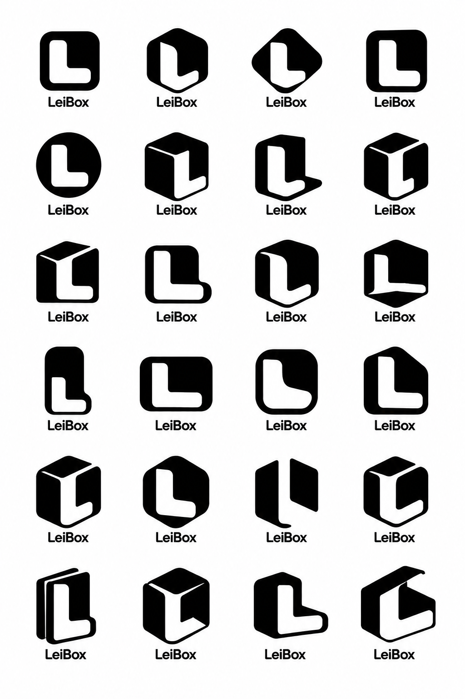
点击查看原图 · 从上到下1—6行，从左到右1—4列
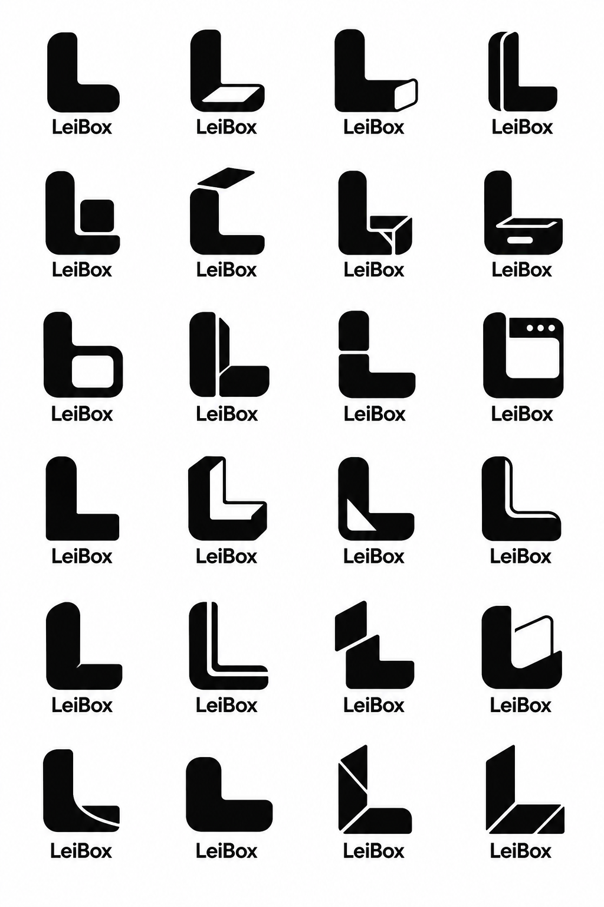
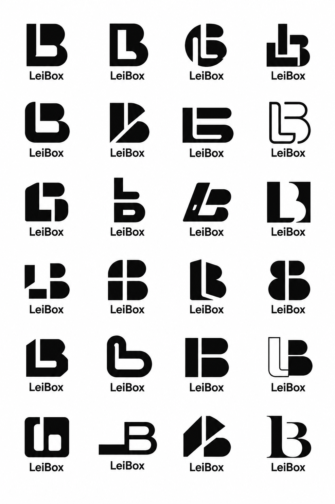
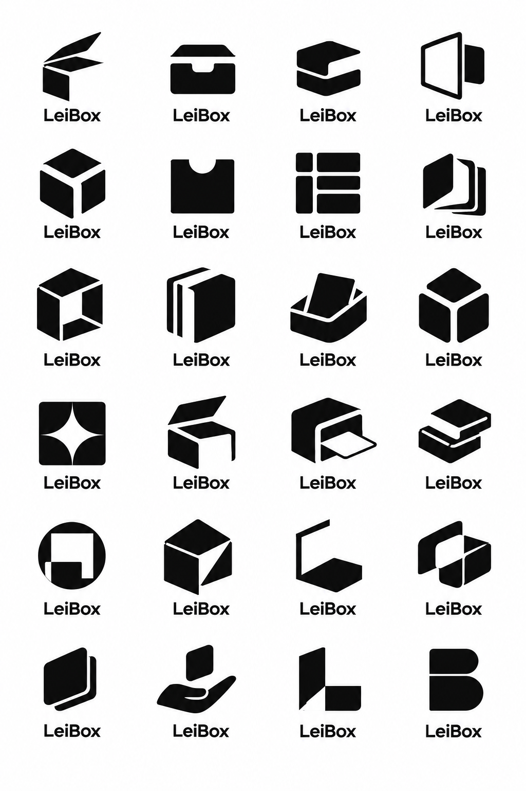
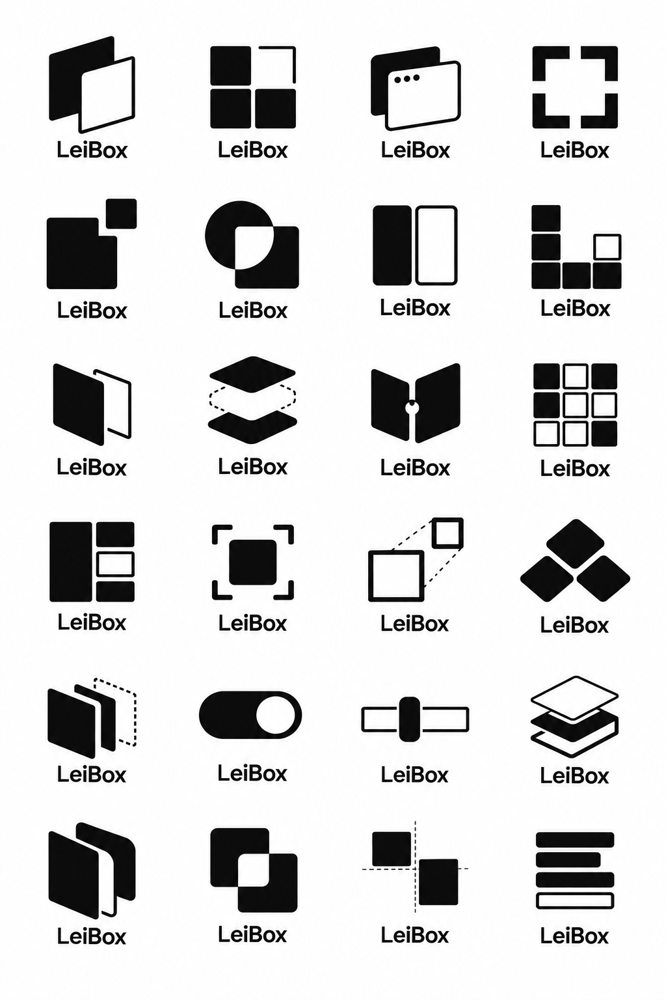
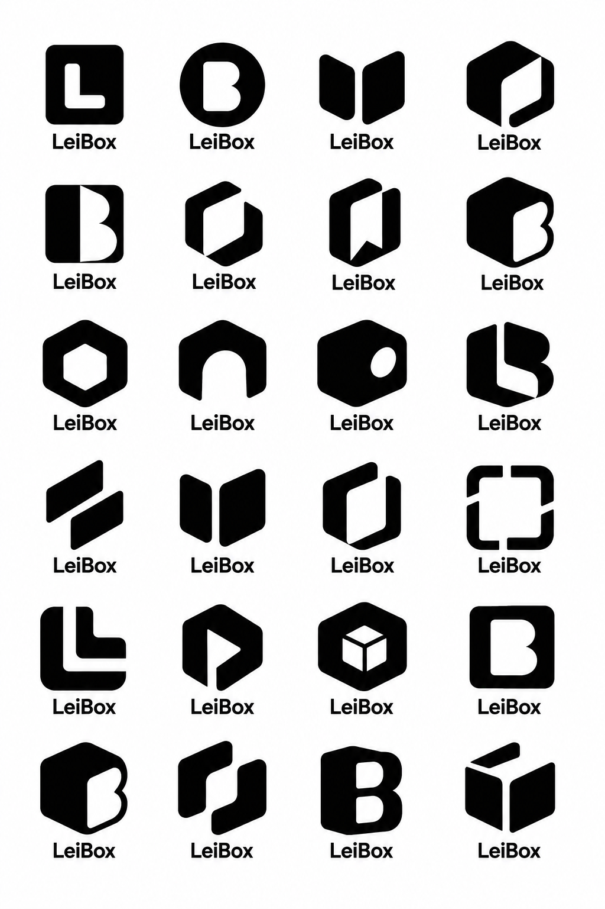
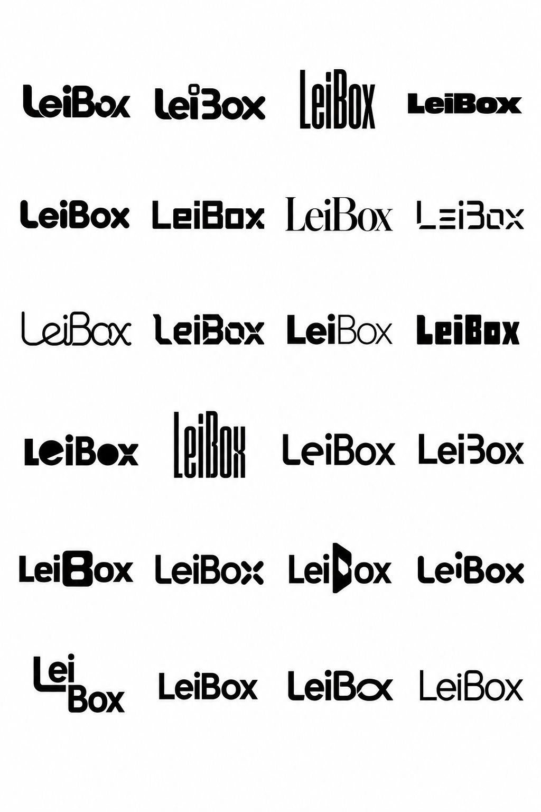
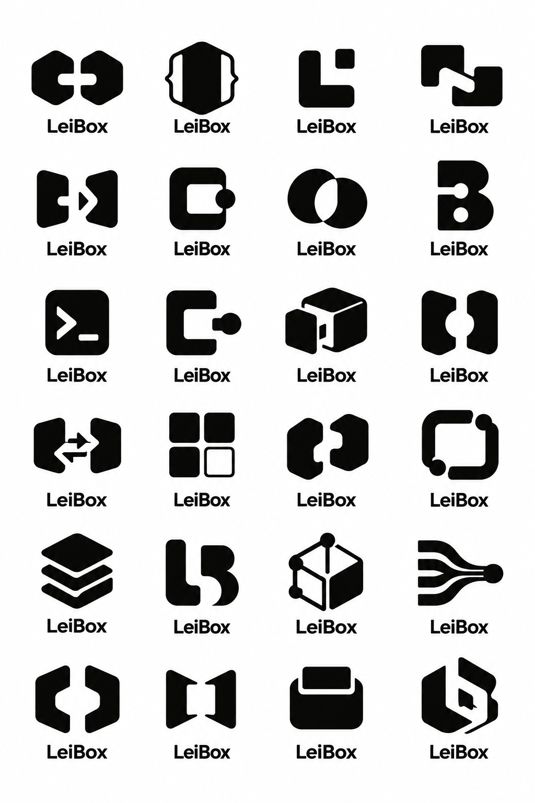
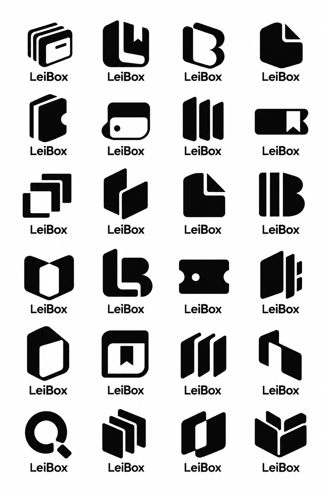
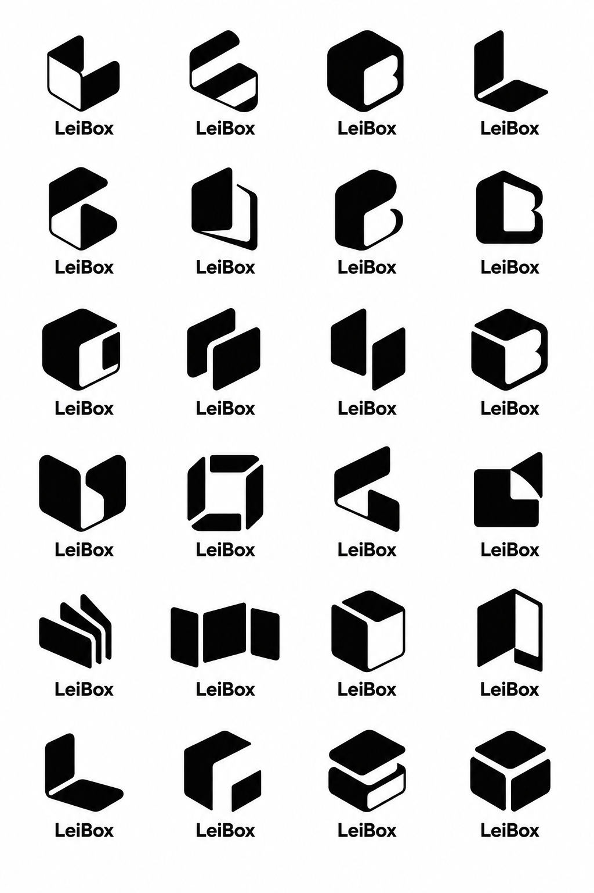
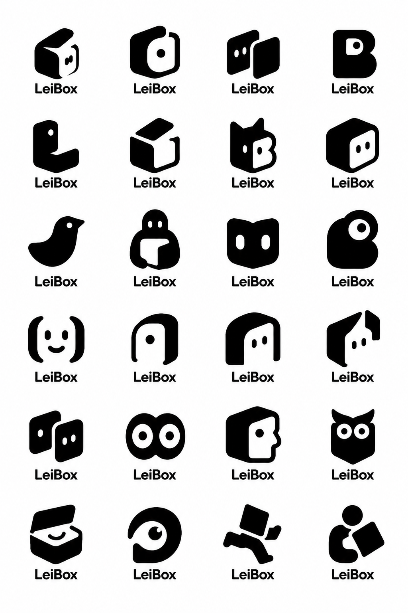
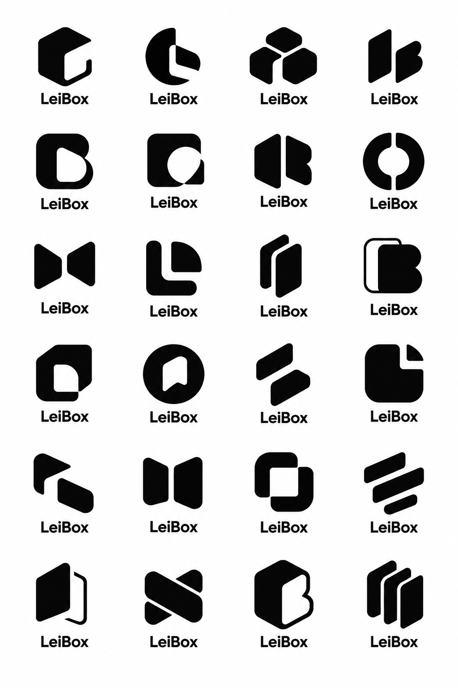
使用内置 image_gen，完整提示词保存在prompts/。各板已目视核对4列×6行。探索阶段包含近似变体及部分字形歧义，选定后再规整轮廓、负形、字标与小尺寸表现。